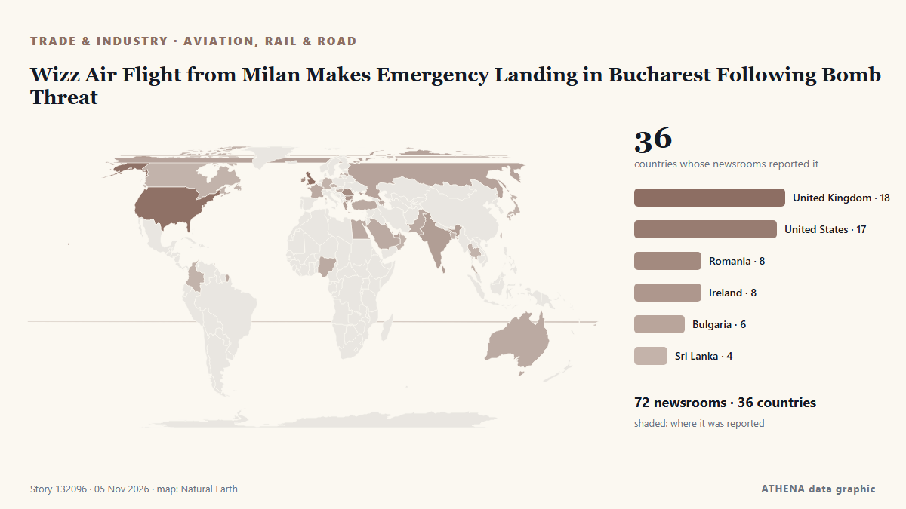

Aviación, tren y carretera
PatrocinadoPresentado por  Cybernetics and Artificial Intelligence Lab Welcome to the Cybernetics and Artificial Intelligence Laboratory, established at the Department of Business Administration of the National and Kapodistrian University of Athens. The lab is headed by Professor Dimitrios Thomakos. The lab aims to do research that can be published in top venues. Our research uses tools and methods of Artificial Intelligence, and lies in the following areas: - Forecasting - Decision making - Cyber security - Finance We are always looking forward to collaborating with exceptional students!
Cybernetics and Artificial Intelligence Lab Welcome to the Cybernetics and Artificial Intelligence Laboratory, established at the Department of Business Administration of the National and Kapodistrian University of Athens. The lab is headed by Professor Dimitrios Thomakos. The lab aims to do research that can be published in top venues. Our research uses tools and methods of Artificial Intelligence, and lies in the following areas: - Forecasting - Decision making - Cyber security - Finance We are always looking forward to collaborating with exceptional students!
| 23 oct | 0 |
|---|---|
| 24 oct | 0 |
| 25 oct | 0 |
| 26 oct | 1 |
| 27 oct | 0 |
| 28 oct | 0 |
| 29 oct | 0 |
| 30 oct | 1 |
| 31 oct | 1 |
| 1 nov | 2 |
| 2 nov | 9 |
| 3 nov | 3 |
| 4 nov | 4 |
| 5 nov | 3 |
Los titulares se muestran en inglés, tal como se publicaron.

Wizz Air Flight from Milan Makes Emergency Landing in Bucharest Following Bomb Threat
Ryanair appears to be the worst-affected airline as at least 10 similar incidents were reported across Europe. de Evening Standard (London)
Emirates Group records $1 billion profit for 2026-2027 despite regional disruption
The Emirates Group saw customer demand holding firm and cargo operations making a strong contribution. de Arabian Business
Aer Lingus plane from Dublin diverted as multiple bomb threats ground European flights
One of the flights affected was flying from Dublin to Rome when it was diverted to an airfield in northern France. de The Irish News (Belfast)
Syrian arrested at Beirut Airport with 40kg suspected cocaine shipment from Ghana – NACOC confirms
The Narcotics Control Commission (NACOC) has confirmed the arrest of a Syrian national at the Rafic Hariri International Airport in Beirut, Lebanon, after he allegedly attempted to transport… de MyJoyOnline
Indian injured in attack on Saudi airport dies, total West Asia toll now 24
The Indian embassy in the Saudi capital, Riyadh, announced the death of the Indian man on social media on Wednesday. de Hindustan Times
International News: Haiti police find burned vehicle used by missing Salvadoran technicians
By Zoila Palma: Haiti’s National Police say they have found the charred remains of a vehicle used by four Salvadoran aviation technicians who went missing after an attack in gang-controlled territory… de Breaking Belize News
Singapore Airlines says 46,000 booking records affected by Amadeus breach
SINGAPORE: Singapore Airlines said on Tuesday that about 46,000 booking records may have been affected by a cybersecurity incident involving Amadeus, its reservation technology provider. de New Straits Times
Choice Shonky awards 2026: From ticket sellers and Virgin flight credits to a 25-hour laundry cycle
Australia’s worst products and services for the year have been named by consumer advocacy group Choice Get our breaking news email, free app or daily news podcast Concert tickets that surge to… de The Guardian
Pope Leo’s Argentina visit: consolation for Francis no-show
Francis visited several Latin American nations, including Brazil, during his papacy but never returned to Argentina, disappointing many compatriots. de Free Malaysia Today
US warns citizens of potential Houthi attacks, travel disruptions in Saudi Arabia
American citizens 'should be aware of potential attacks on airports, airspace closures, flight cancellations and travel disruptions,' says US mission. de Anadolu Agency (English)
HH hails Lobito Railway project as industrial game changer
This content is for members only. Visit the site and log in/register to read. de News Diggers
Around 10 European flights hit by bomb threats, triggering fighter jet scramble
LONDON: About 10 European flights were targeted by bomb threats on Tuesday, forcing the brief closure of a Warsaw airport and the scrambling of air force planes in Rome, authorities said. de New Straits Times
New Ebola-Related Requirement for Travel to the US: What Passengers Must Declare
Korean Air will require all passengers traveling to the United States to submit an Ebola-related declaration confirming they have not visited or stayed in the Democratic Republic of the Congo within… de The Korea Times
IndiGo moves beyond Stretch seats with lie-flat Business Class plans
First 10 A350s to be delivered from second quarter of 2028 will have 16 flat beds, while future A350s could have more; future XLRs too will have flat beds, said CEO William Walsh. de The Hindu
MOM probes 45 firms over suspected work pass offences, illegal deployment at Changi Airport
About 270 workers may have been deployed in breach of work pass rules. de CNA (Channel NewsAsia)
Ryanair to review pay freezes and AI use to counter jet fuel price surge
The Dublin-based airliner said it was predicting a jump of roughly two billion euros in its fuel bill for the year to March 2028. de Evening Standard (London)
Plane stops at Manchester Airport to pick up Andy Burnham before flying to Caribbean
The flight took off from London Stansted this morning then stopped at Manchester to pick up the Prime Minister. de Manchester Evening News
Armenia has effectively begun implementing TRIPP project, Pashinyan says
The Government of Armenia has effectively already begun implementing the “Trump Route for International Peace and Prosperity” (TRIPP) project, Prime Minister Nikol Pashinyan told lawmakers on Monday… de AzerNews